AI Structure 3D Builder อ่านแบบ (รูป / PDF / DXF) ด้วย AI แล้วสร้างโมเดลโครงสร้าง 3D (เหล็ก + คสล.) ออกแบบเบื้องต้นตาม ACI / AISC / AISI / วสท. ถอด BOQ แบบ ปร.4 เขียนแบบ 2D และส่งออกไป STAAD, ETABS, AutoCAD, SketchUp ได้ในที่เดียว คู่มือนี้อธิบายลำดับการใช้งาน ทุกปุ่มคำสั่ง และ AI แต่ละชุด พร้อมรูปประกอบ
ทางที่เร็วที่สุด: อัปโหลดแบบ → ตรวจเอกสาร → กด ⚡ AUTO GEN → อ่านรายงาน → สั่งแก้ → Export ตามลูกศรด้านล่าง
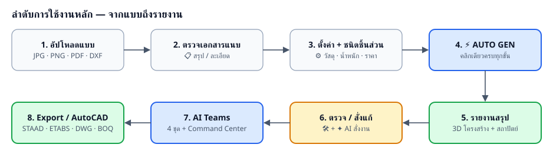
วิธีเปิดโปรแกรม (เลือกได้ 3 ทาง)
| ทาง | ที่อยู่ | AI ทำงานไหม |
|---|---|---|
| ใน Claude (แนะนำ) | claude.ai/artifact/Aup32pTV7DDAuaRTFiHWtQ | ได้ครบทุกฟังก์ชัน AI |
| GitHub Pages | sanyam1986s-hub.github.io/ai-structure-3d-builder | คำนวณ / 3D / BOQ / Export ได้ · AI ให้กด 🚀 เข้า Claude |
| ไฟล์ในเครื่อง | D:\Claude_Project\Claude_สร้างโครงสร้างอัตโนมัต\AI_Structure_3D_Builder.html (วาง acad.js และโฟลเดอร์ manual ไว้ด้วยกัน) | ใช้ offline ได้ ยกเว้น AI |
หน่วยในโปรแกรม: kgf, ksc (kgf/cm²), cm, m · ราคาเป็นบาท
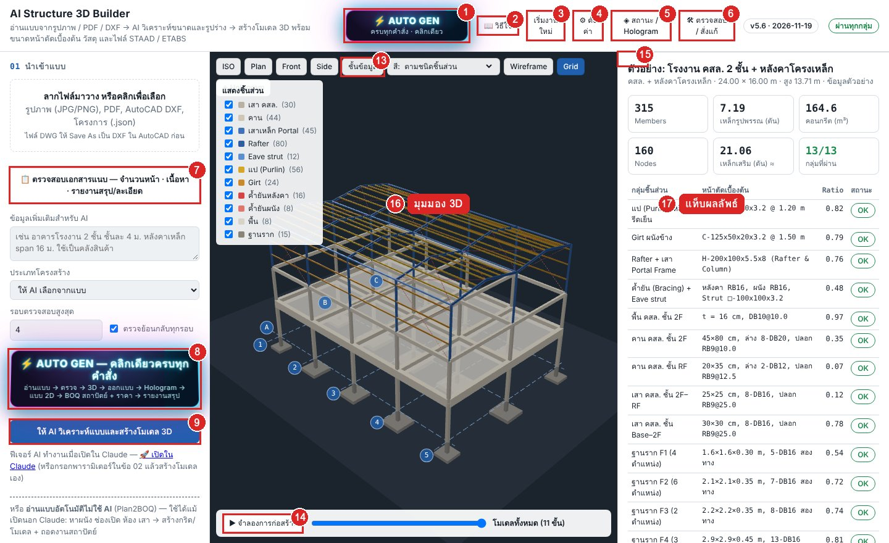
| เลข | คำสั่ง / ส่วน | ใช้ทำอะไร |
|---|---|---|
| 1 | ⚡ AUTO GEN (แถบบน) | คลิกเดียวทำครบ: อ่านแบบ → 3D → ออกแบบ → แบบ 2D → BOQ → รายงาน |
| 2 | 📖 วิธีใช้ | เปิดหน้าช่วยเหลือ + ปุ่ม 📘 คู่มือฉบับเต็ม (เอกสารนี้) และดาวน์โหลด PDF |
| 3 | เริ่มงานใหม่ | เปิดหน้าต่างเริ่มงาน เพื่ออัปโหลดแบบชุดใหม่ |
| 4 | ⚙ ตั้งค่า | วัสดุ น้ำหนักบรรทุก ข้อมูลโครงการ หน่วย/มาตราส่วนแบบ ความละเอียด AI |
| 5 | ◈ สถานะ / Hologram | เปิดหน้าต่างสถานะงาน % และภาพ Hologram ลำดับการสร้าง |
| 6 | 🛠 ตรวจสอบ / สั่งแก้ | รายการส่วนที่ขาด/ประเด็นค้าง → เลือกแล้วสั่ง AI แก้ |
| 7 | 📋 ตรวจสอบเอกสารแนบ | ดูจำนวนหน้า ชนิดแผ่น เนื้อหา ก่อนให้ AI ทำงาน |
| 8 | ⚡ AUTO GEN (แผงซ้าย) | เหมือนข้อ 1 อยู่ใต้ช่องอัปโหลด |
| 9 | ให้ AI วิเคราะห์แบบและสร้างโมเดล 3D | ทำเฉพาะขั้นอ่านแบบ + สร้างโมเดล (ไม่ทำแบบ 2D/BOQ) |
| 13 | ชั้นข้อมูล / Wireframe / Grid / ◈ Hologram | เปิด-ปิดชนิดชิ้นส่วน เปลี่ยนการแสดงผล 3D |
| 14 | ▶ จำลองการก่อสร้าง | เล่นการก่อสร้างทีละชั้น (ฐานราก → เสา → คาน → พื้น → หลังคา) |
| 15 | แถบแท็บ | สรุป · AI สั่งงาน · Calc Sheet · วัสดุ · BOQ · BOQ ละเอียด · แบบ 2D · AutoCAD 2D · AI Teams · Export · Skill |
| 16 | มุมมอง 3D | ลากซ้าย = หมุน · ลากขวา = เลื่อน · ล้อเมาส์ = ซูม · คลิกชิ้นส่วน = ดูข้อมูล |
| 17 | แท็บผลลัพธ์ | แสดงผลของแท็บที่เลือก |
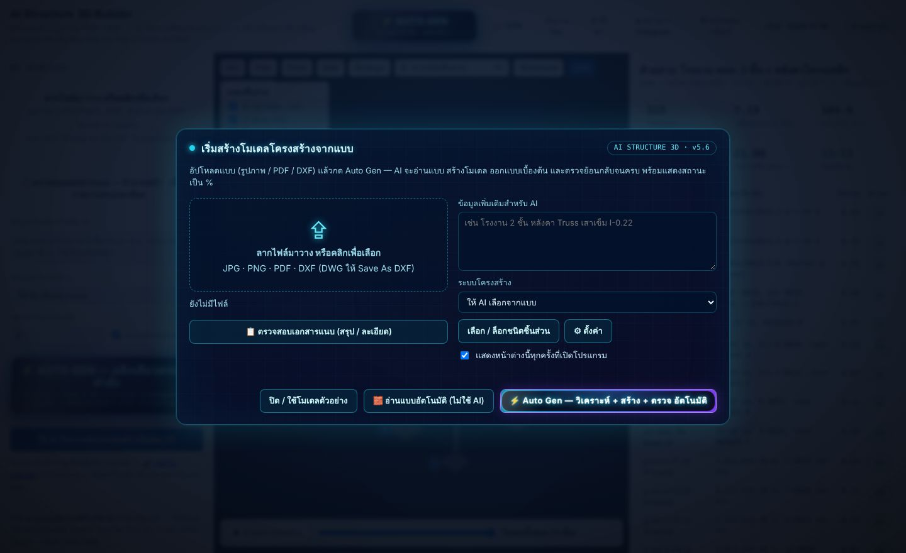
| ลำดับ | คำสั่ง / ปุ่ม | ใช้ทำอะไร |
|---|---|---|
| 1 | กล่อง "ลากไฟล์มาวาง" | อัปโหลด JPG / PNG / PDF / DXF ได้หลายไฟล์ เช่น แปลน + รูปตัด + แบบหลังคา (DWG ให้ Save As DXF ก่อน) |
| 2 | ข้อมูลเพิ่มเติมสำหรับ AI | พิมพ์สิ่งที่แบบไม่ชัด เช่น "โรงงาน 2 ชั้น หลังคา Truss เสาเหล็ก I-0.22" |
| 3 | ระบบโครงสร้าง | "ให้ AI เลือกจากแบบ" หรือบังคับ: อาคาร คสล. / คสล. + หลังคาเหล็ก / Portal Frame / โครงเหล็กหลายชั้น |
| 4 | 📋 ตรวจสอบเอกสารแนบ | ดูสรุป/ละเอียดทุกหน้า → ✦ ให้ AI อ่านเอกสาร → 💾 ส่งออก .md → ⚡ ยืนยัน + AUTO GEN |
| 5 | เลือก / ล็อกชนิดชิ้นส่วน | ติ๊กเฉพาะชิ้นส่วนที่มีจริง แต่ละชนิดเลือกได้ "🤖 AI อัตโนมัติ" หรือ "✍ กำหนดเอง (AI ห้ามเปลี่ยน)" |
| 6 | ⚙ ตั้งค่า | กำลังวัสดุ น้ำหนักบรรทุก ราคา (ดูหัวข้อ 4) |
| 7 | ⚡ Auto Gen — วิเคราะห์ + สร้าง + ตรวจ | เริ่มทำงานอัตโนมัติครบทุกขั้น (ใช้ AI) |
| ทางเลือก | 🧱 อ่านแบบอัตโนมัติ (ไม่ใช้ AI) | อ่านกริด/ผนัง/ช่องเปิดด้วยอัลกอริทึม Plan2BOQ ใช้ได้ตอน offline |
| ทางเลือก | ↺ เปิดโครงการล่าสุด | เปิดงานที่ทำค้างไว้ |
| ทางเลือก | ปิด / ใช้โมเดลตัวอย่าง | เปิดโมเดลตัวอย่าง (โรงงาน คสล. 2 ชั้น + หลังคาเหล็ก) ไว้ทดลอง |
⚡ AUTO GEN ทำต่อเนื่องตามลูกศร — ระหว่างทำงานมีหน้าต่างสถานะแสดง % กด "หยุด" ได้ตลอด
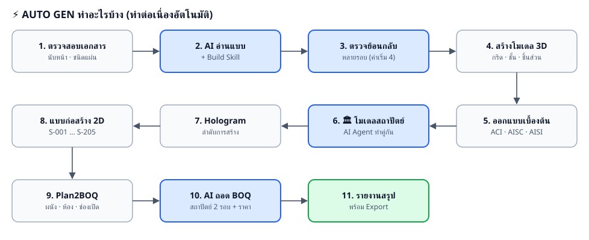
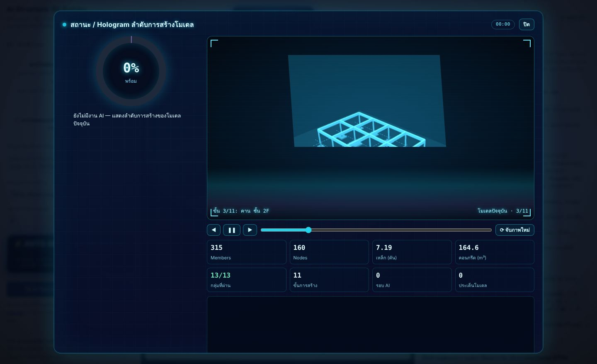
01 นำเข้าแบบ
| คำสั่ง | ใช้ทำอะไร |
|---|---|
| ช่องอัปโหลด / ข้อมูลเพิ่มเติมสำหรับ AI | เหมือนหน้าต่างเริ่มต้น |
| ประเภทโครงสร้าง · รอบตรวจสอบสูงสุด · ☑ ตรวจย้อนกลับ | กำหนดจำนวนรอบที่ AI เทียบโมเดลกับแบบ (ค่าเริ่ม 4) |
| ให้ AI วิเคราะห์แบบและสร้างโมเดล 3D | อ่านแบบ + สร้างโมเดลเท่านั้น |
| 🧱 อ่านแบบอัตโนมัติ (ไม่ใช้ AI) → กริด + ผนัง | Plan2BOQ ไม่ต้องใช้ AI · ใส่ "กว้างรวมแนวนอน (m)" เพื่อกำหนดมาตราส่วน |
02 พารามิเตอร์ (แก้เองได้ทุกค่า แล้วกด "สร้างโมเดล + ออกแบบเบื้องต้น")
| กลุ่ม | ค่าที่กรอก |
|---|---|
| กริด | ระยะ Grid X / Y (m) · ชื่อ Grid X / Y · ตำแหน่งที่ไม่มีเสา (เช่น 2-B, 3-B) |
| ชั้น | ชื่อชั้น · ความสูงแต่ละชั้น (m) |
| หลังคา | ระบบหลังคา "🤖 AI อัตโนมัติ — อ่านจากแบบ" (ค่าเริ่ม) หรือ "✍ กำหนดเอง" · ความสูงชายคา · ความชัน (°) · ระยะแป · ระยะ Girt · ระยะจันทันเดี่ยว · ค้ำยัน X-Bracing · ฐานเสาเหล็ก ยึดหมุน/ยึดแน่น |
| ฐานราก | qa ดิน (t/m²) · Df (m) · ขนาด/ความยาวเข็ม · น้ำหนักปลอดภัยเข็ม (ตัน/ต้น) |
| ชิ้นส่วนเพิ่ม | JSON extras = คานซอย คานยื่น เสาเพิ่ม ค้ำยัน (พิกัด m) |
| เลือกชนิดชิ้นส่วน | พื้น · เสา · คาน · หลังคา · ฐานราก ฯลฯ ล็อกค่าได้ |
⚙ ตั้งค่า — คอนกรีต fc' (210 / 240 / 280 / 320 ksc) · เหล็กเสริมหลัก SD40 / SD50 · ปลอก SR24 · รูปพรรณ SS400 / SM490 / SM520 · LL ตามกฎกระทรวง ฉ.6 ข้อ 15 (150–500 kg/m²) · SDL · DL หลังคา · ผนังบนคาน · แรงลม · ตัวคูณ D / L · หน่วยแบบ (mm / m) · มาตราส่วน (1:50 / 1:100 / 1:200) · กระดาษ (A0–A3) · ข้อมูลโครงการ (ชื่อ เจ้าของ สถานที่ วิศวกร ใบอนุญาต กว.) · ระดับความละเอียด AI (เร็ว / มาตรฐาน / ละเอียดสูงสุด) · จำนวนหน้า PDF ที่อ่านสูงสุด → กด "บันทึกการตั้งค่า"
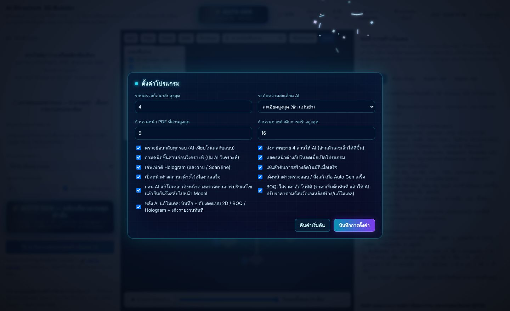
| คำสั่ง | ใช้ทำอะไร |
|---|---|
| ISO / Plan / Front / Side | เปลี่ยนมุมมองกล้อง |
| ชั้นข้อมูล | เปิด-ปิดแต่ละชนิด (เสา คาน แป Rafter ค้ำยัน ฐานราก …) พร้อมจำนวนชิ้น |
| สี: ตามชนิดชิ้นส่วน / ตามวัสดุ / ตามอัตราส่วนการใช้งาน | ระบายสีเพื่อดูชิ้นที่ Ratio สูงหรือ NG |
| Wireframe · Grid | แสดงเส้นโครง / กริดอ้างอิง |
| ◈ Hologram | โหมดแสดงผลเรืองแสง |
| ▶ จำลองการก่อสร้าง + แถบเลื่อน | เล่นทีละขั้น หรือเลื่อนดูถึงชั้นที่ต้องการ |
| คลิกชิ้นส่วน | ดูหน้าตัด ความยาว ผลออกแบบ (OK/NG) |
| แท็บ | ใช้ทำอะไร | คำสั่งในแท็บ |
|---|---|---|
| สรุป | จำนวน Members / Nodes · น้ำหนักเหล็ก (ตัน) · คอนกรีต (m³) · ผลออกแบบทุกกลุ่ม (Ratio + OK/NG) | — |
| ✦ AI สั่งงาน | สั่ง AI ปรับ/แก้/เพิ่มชิ้นส่วนด้วยภาษาไทย | ปุ่มคำสั่งตัวอย่าง · 📎 แนบไฟล์ · ส่งคำสั่ง · ↶ ย้อนกลับ · ล้างบทสนทนา |
| Calc Sheet | รายการคำนวณทุกกลุ่ม แทนค่าตัวเลขเต็ม + OK/Ratio | อ้างอิง ACI 318 / AISC ASD / AISI S100 · กฎกระทรวง ฉ.6 |
| วัสดุ & หน้าตัด | คุณสมบัติวัสดุ (Fy, Fu, E, ν, ρ) และหน้าตัดที่ใช้ (A, Ix, Iy, Sx) | — |
| BOQ | ปริมาณเหล็กรูปพรรณ (kg) คอนกรีต (m³) แบบหล่อ (m²) ตามรายการ | — |
| BOQ ละเอียด | BOQ แบบ ปร.4 พร้อมราคา Factor F แยกงานโครงสร้าง/สถาปัตย์ | ⚡ AI ถอดปริมาณละเอียด + ราคา · คำนวณงานโครงสร้างใหม่ · ส่งออก BOQ (.csv / Excel) · 🧱 ถอดงานสถาปัตย์ (ไม่ใช้ AI) · ↶ คืนผนังที่ลบ · จังหวัด (ฐานราคา) · Factor F |
| แบบ 2D | ชุดแบบ S-001 … S-205 (แปลน รูปด้าน รายละเอียด ตาราง) | ⚡ Auto สร้างแบบ 2D · เลือกรูปแบบ DXF 2018 / R12 / LISP · ส่งออก AutoCAD ทั้งชุด · แผ่นนี้ (.html) · ชุดแบบพิมพ์ / PDF · − + ซูม |
| AutoCAD 2D | เขียนแบบลง AutoCAD โดยตรง (หัวข้อ 8) | ✍ ส่งออกไป AutoCAD · 📋 คัดลอกโค้ด · ↻ ดูตัวอย่าง · ✦ AI เขียนแบบ → เปิด AutoCAD วาด · ⬇ ติดตั้ง AutoCAD Agent |
| AI Teams | AI 4 ชุด + Command Center (หัวข้อ 7) | 🚀 รัน AI ทุกชุด + รวมรายงาน · ▶ รันชุดนี้ |
| Export | ส่งออกไฟล์ทุกชนิด (หัวข้อ 10) | คลิกแต่ละรายการเพื่อดาวน์โหลด |
| Skill | Skill การอ่านแบบ / ถอดแบบสถาปัตย์ ที่ฝังในโปรแกรม | บันทึก Skill · คืนค่าเริ่มต้น · Export .md · Import .md |
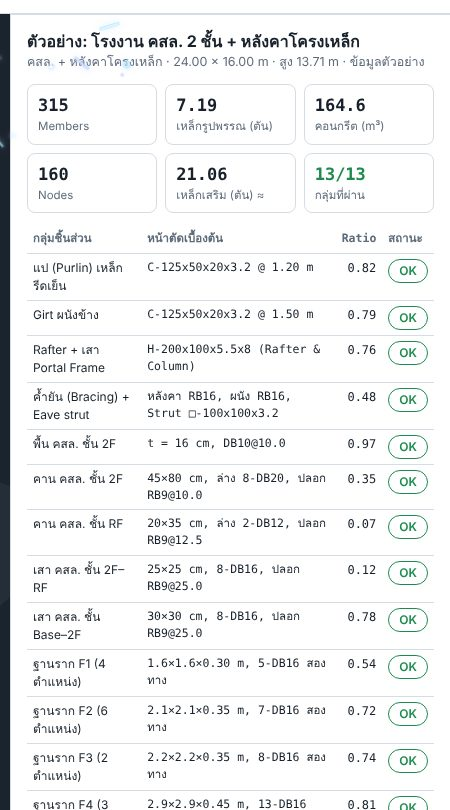
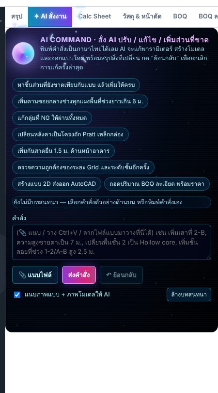
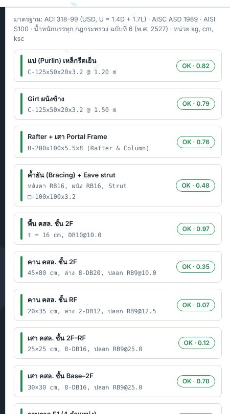
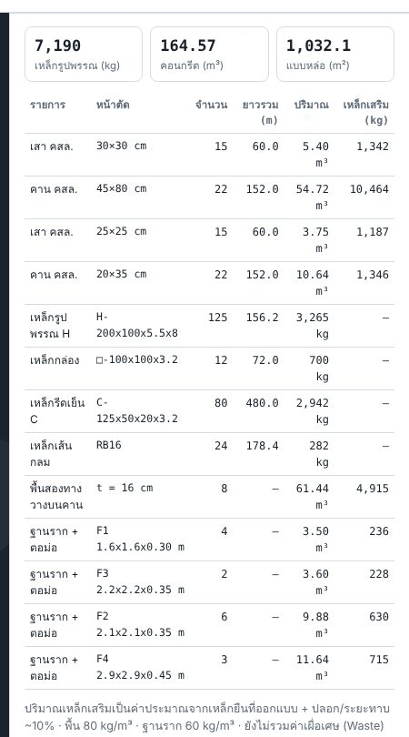
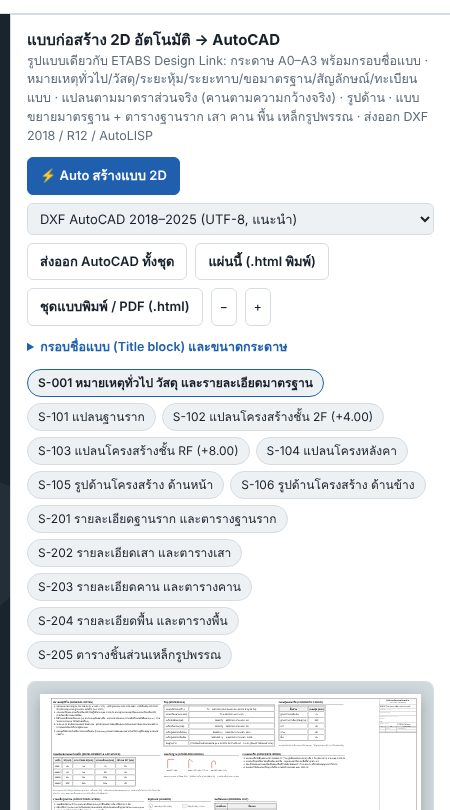
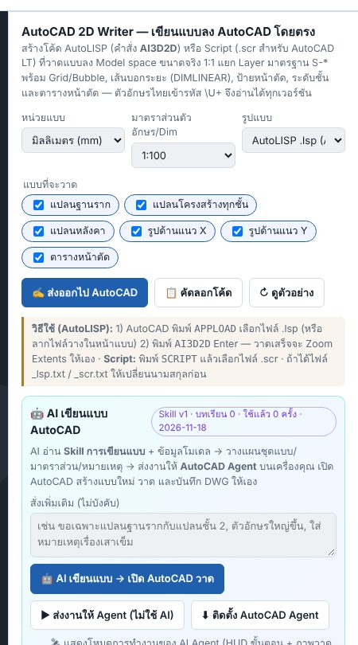
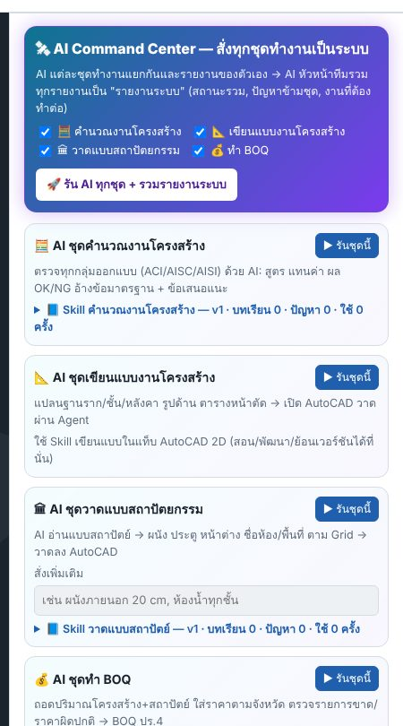
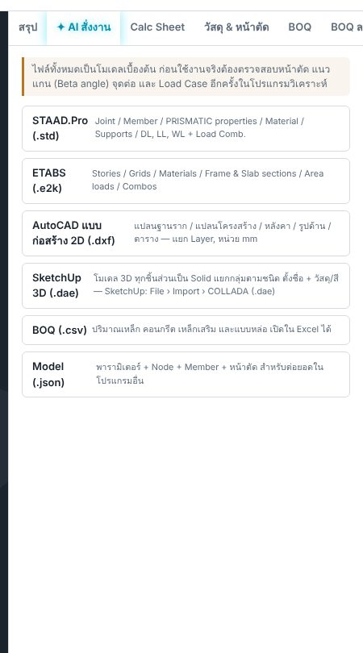
BOQ ละเอียด ↔ Model — คลิกรายการใน BOQ ละเอียด โปรแกรมจะสลับไปหน้า Model และไฮไลต์ชิ้นส่วนนั้นแบบโปร่งใส พร้อมเส้นเหล็กเสริมและรายการวัสดุ
| AI | เรียกจาก | ทำอะไร | ผลลัพธ์ |
|---|---|---|---|
| AI อ่านเอกสาร | 📋 ตรวจสอบเอกสารแนบ → ✦ ให้ AI อ่านเอกสาร | อ่านทุกหน้า สรุปชนิดแผ่น มาตราส่วน รหัสชิ้นส่วน ความพร้อม แผ่นที่ขาด | รายงานสรุป/ละเอียด (.md) |
| AI วิเคราะห์แบบ (Build) | ⚡ AUTO GEN หรือ "ให้ AI วิเคราะห์แบบ…" | อ่านกริด ระดับ ขนาดชิ้นส่วน หลังคา ตาม Build Skill แล้วตรวจย้อนกลับหลายรอบ | โมเดล 3D + สิ่งที่อ่านได้ + สมมติฐาน |
| ✦ AI สั่งงาน | แท็บ AI สั่งงาน | ทำตามคำสั่งภาษาไทย เช่น "เพิ่มคานซอยกลางช่อง B-C ชั้น 2" | Popup ตัวอย่างการแก้ → ยืนยัน → หน้า Model + รายงาน |
| 🛠 AI ตรวจ / สั่งแก้ | ปุ่ม 🛠 ตรวจสอบ / สั่งแก้ | 🔍 หาส่วนที่ขาดอีกครั้ง · 🛠 แก้รายการที่เลือก · พิมพ์คำสั่ง + 📎 แนบไฟล์ | โมเดลที่แก้แล้ว + ↶ ย้อนกลับ |
| AI ถอด BOQ + ราคา | BOQ ละเอียด → ⚡ AI ถอดปริมาณละเอียด + ราคา | ถอดงานสถาปัตย์/โครงสร้างละเอียด ใส่ราคาตามจังหวัด + Factor F | BOQ ปร.4 |
| ✦ AI เขียนแบบ AutoCAD | แท็บ AutoCAD 2D | อ่าน Skill เขียนแบบ + ข้อมูลโมเดล วางแผนชุดแบบ แล้วส่งให้ Agent วาด | ไฟล์ DWG |
| 🧮 AI ชุดคำนวณโครงสร้าง | AI Teams | ตรวจทุกกลุ่มออกแบบ (ACI/AISC/AISI) ตรวจรายการคำนวณตามมาตรฐาน | รายงานคำนวณ + ปัญหาเข้า Skill |
| 📐 AI ชุดเขียนแบบโครงสร้าง | AI Teams | วางแผนชุดแบบ มาตราส่วน หมายเหตุ → entities → QA → ส่ง Agent | ชุดแบบโครงสร้าง DWG |
| 🏛 AI ชุดวาดแบบสถาปัตยกรรม | AI Teams | อ่านแบบ → ผนัง ประตู หน้าต่าง ห้อง → แปลนสถาปัตย์ | แปลนสถาปัตย์ DWG |
| 💰 AI ชุดทำ BOQ | AI Teams | ถอดโครงสร้าง + สถาปัตย์ + ราคา ตรวจรายการขาด/ราคาผิดปกติ | BOQ ปร.4 |
| 🚀 AI Command Center | AI Teams | สั่ง 4 ชุดทำงานเป็นลำดับขั้น แล้วรวมรายงานระบบ | รายงานรวม (สถานะ · ปัญหา · %) |
✦ AI สั่งงาน / สั่งแก้ — ดูผลก่อนยืนยันเสมอ
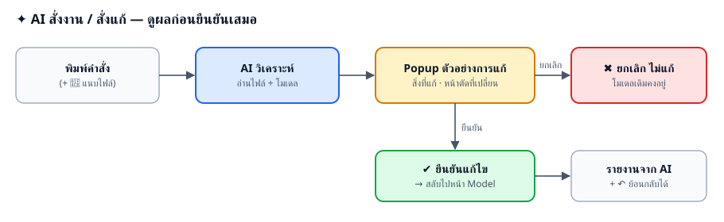
AI Teams — 4 ชุดทำงานเป็นลำดับขั้น
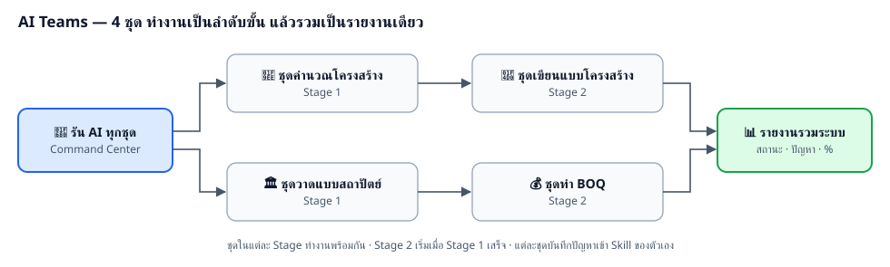
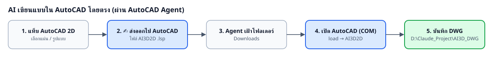
ติดตั้งครั้งแรก (Windows + AutoCAD เต็มรุ่น)
ใช้งาน
แก้ปัญหา
| อาการ | วิธีแก้ |
|---|---|
| ดับเบิลคลิก .bat แล้วปิดทันที | คลิกขวา .ps1 → Properties → Unblock แล้วรันใหม่ |
| Agent ไม่เห็นไฟล์ | ตรวจว่าเบราว์เซอร์บันทึกลง Downloads และชื่อไฟล์มี AI3D2D |
| AutoCAD ถามความปลอดภัยไฟล์ LISP | Agent ตั้ง TRUSTEDPATHS ให้แล้ว หากยังถาม เลือก "Load Once" |
| AutoCAD LT | LT 2024 ขึ้นไปรัน LISP ได้ รุ่นเก่าใช้ไฟล์ .scr |
| Skill | อยู่ที่ | ใช้กับ |
|---|---|---|
| Build Skill (การสร้างโมเดล) | แท็บ Skill | AI อ่านแบบ + ตรวจย้อนกลับ |
| Skill ถอดแบบสถาปัตยกรรม | แท็บ Skill | AI ถอด BOQ งานสถาปัตย์ |
| Skill การเขียนแบบ AutoCAD | แท็บ AutoCAD 2D | AI เขียนแบบ + Agent |
| Skill คำนวณ / สถาปัตย์ / BOQ | แท็บ AI Teams (ใต้แต่ละชุด) | AI Teams แต่ละชุด |
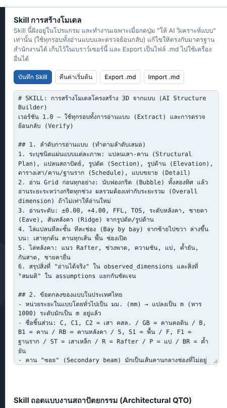
| การแสดงผล | เกิดขึ้นเมื่อ | ดูอะไรได้ |
|---|---|---|
| AI CORE (ตัวอักษร Matrix) กลางจอ | ทุกครั้งที่มีคำสั่งใช้ AI | ชื่องาน · เวลา · สถานะ → COMPLETE / ERROR แล้วหายเอง |
| AI CORE แบบโปร่งใสในภาพ Hologram | เปิดหน้าต่างสถานะ / Hologram อยู่ | ซ้อนจาง ๆ ใต้ภาพการสร้าง ไม่บังรูป |
| AI CORE ขนาดเล็กมุมขวาล่าง | มีหน้าต่างอื่นเปิดอยู่ | ไม่บังหน้าต่างที่ทำงาน |
| Agent Mode HUD | AI Teams / AI เขียนแบบ | ขั้นตอน % สถานะ ปัญหา แบบ real-time |
| รายงานสรุป | จบ AUTO GEN | OK/NG · ปริมาณ · ราคา · ประเด็นที่ต้องตรวจ |
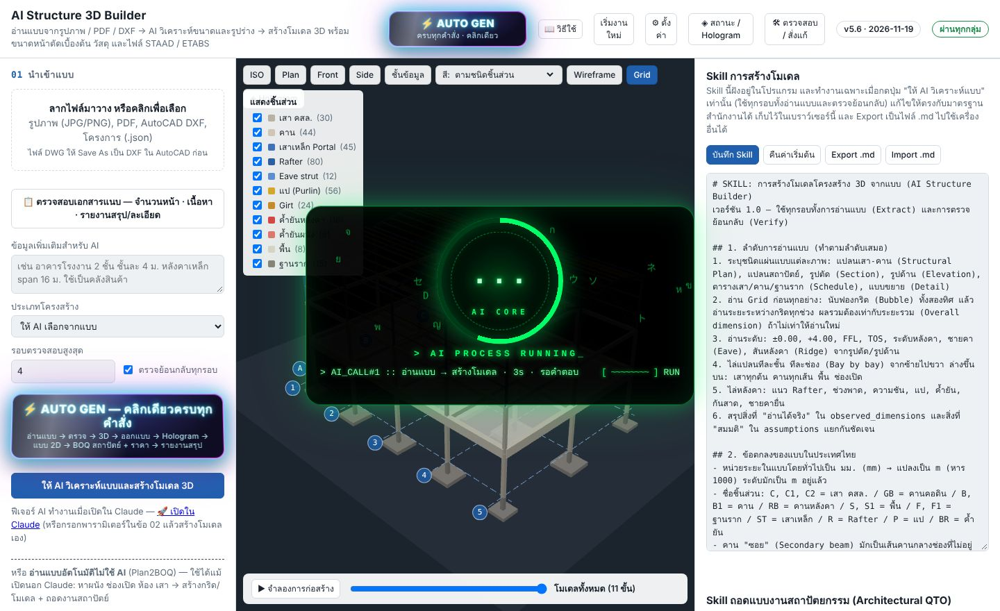
| ไฟล์ | อยู่ที่ | เปิดด้วย / ใช้ทำอะไร |
|---|---|---|
| STAAD.Pro (.std) | แท็บ Export | Joint / Member / Property / Support / DL LL WL + Load Comb. |
| ETABS (.e2k) | แท็บ Export | Stories / Grids / Materials / Sections / Area loads / Combos |
| AutoCAD (.dxf) | แท็บ Export / แบบ 2D | DXF 2018–2025 (UTF-8, แนะนำ) · DXF R12 (CAD รุ่นเก่า) · แยก Layer หน่วย mm |
| AutoLISP (.lsp) / Script (.scr) | แท็บ AutoCAD 2D | วาดลง AutoCAD โดยตรง |
| SketchUp (.dae) | แท็บ Export | SketchUp: File › Import › COLLADA (.dae) แยกกลุ่มตามชนิด พร้อมสี |
| BOQ (.csv) | แท็บ Export / BOQ ละเอียด | เปิดใน Excel |
| ชุดแบบพิมพ์ (.html → PDF) | แท็บแบบ 2D | เปิดแล้วสั่งพิมพ์เป็น PDF |
| Model (.json) | แท็บ Export | พารามิเตอร์ + Node + Member + หน้าตัด |
| บันทึกโครงการ (.json) | รายงานสรุป → 💾 | เปิดงานต่อภายหลัง |
| อาการ | วิธีแก้ |
|---|---|
| เปิดนอก Claude แล้ว AI ไม่ทำงาน | กด 🚀 เข้า Claude ทันที หรือใช้โหมด "ไม่ใช้ AI" (Plan2BOQ) |
| AI อ่านแบบไม่ครบ | ตรวจเอกสารแนบก่อน · พิมพ์ข้อมูลเพิ่มเติม · เพิ่มรอบตรวจสอบ · ใช้ 🛠 ตรวจสอบ / สั่งแก้ |
| ชิ้นส่วนเกิน / ผิดชนิด | เลือก / ล็อกชนิดชิ้นส่วน · ตั้งเป็น "✍ กำหนดเอง" |
| ผนังผิดใน Plan2BOQ (เฟอร์นิเจอร์ ต้นไม้) | แตะเส้นผนังบนภาพเพื่อลบ · ↶ คืนผนังที่ลบ |
| PDF หลายหน้าอ่านไม่หมด | ⚙ ตั้งค่า → จำนวนหน้า PDF ที่อ่านสูงสุด |
| เปิดไฟล์ในเครื่องแล้วไม่มีแท็บ AutoCAD / คู่มือ | วาง acad.js และโฟลเดอร์ manual ไว้โฟลเดอร์เดียวกับไฟล์ .html |